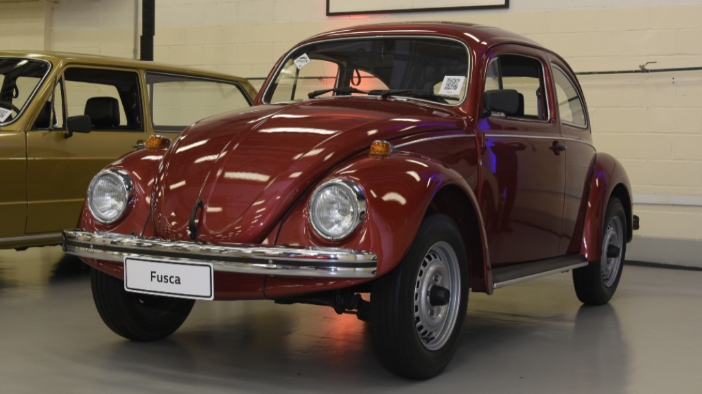

A história da Volkswagen teve início na década de 1930, na Alemanha Nazista, com a construção do consagrado Fusca e o objetivo de produzir carros populares, como indica seu nome. Com presença em 153 países, hoje a companhia é uma das maiores fabricantes de automóveis do mundo.
Ao longo das décadas, a Volkswagen desenvolveu inúmeros veículos de sucesso. Além do Fusca, alguns automóveis que marcaram história foram a Kombi, Golf, Gol, Jetta, Santana, Passat, Corrado, Caddy, Sharan, Fox e tantos outros.
Pelo mundo, a Volkswagen conta com mais de 550 mil funcionários, que produzem diariamente aproximadamente 37.500 veículos.
A Volkswagen chegou ao Brasil em 1953, quando as primeiras unidades do Fusca foram montadas a partir de peças importadas da Alemanha. Com o sucesso, a marca construiu, em São Bernardo do Campo, a primeira fábrica fora do território alemão.

Um dos maiores destaques da empresa no Brasil foi o Gol, desenhado no país e lançado em 1980, que se tornou uma das grandes histórias de sucesso da indústria automobilística nacional, com mais de 8 milhões de unidades produzidas. O modelo foi o primeiro a deixar para trás o Fusca em vendas totais no Brasil.
Segundo as informações da empresa, atualmente a Volkswagen do Brasil conta com cerca de 500 concessionárias e quatro fábricas. No país, já foram produzidos mais de 24 milhões de veículos.
A marca de automóveis dá nome ao Grupo Volkswagen, conglomerado que controla também outros nomes conhecidos do mercado automotivo, incluindo Audi, Bentley, Bugatti, Ducati, Lamborghini, Porsche e Scania, entre outros nomes. Juntas elas produzem carros populares, esportivos e luxuosos, motos, caminhões e ônibus.